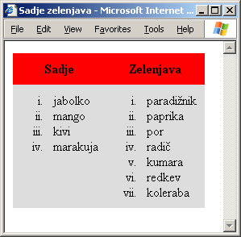

Utrjujemo snov 4. poglavja
Vprašanja z izbiro
- Želimo desno uravnati vsebine vseh celic v tabeli z desetimi vrsticami in desetimi stolpci. Kateremu oziroma katerim elementom dodelimo lastnost align="right", da to dosežemo s čim manj pisanja?
- Elementu table.
- Vsem elementom tr.
- Vsem elementom td.
- Vsem elementom th.
- Kje lahko uporabimo element li?
- V elementu table.
- V elementih tr, td in th.
- V elementih ul, ol in dl.
- V elementih ul in ol.
- Kje lahko uporabimo element dd?
- V elementih ul, ol in dl.
- V elementu dl.
- V elementu dt.
- V elementu table.
- Kje lahko uporabimo element td?
- V elementu dl.
- V elementu table.
- V elementu tr.
- V elementu th.
- Katere elemente lahko vstavimo direktno v element table?
- Elemente td, th in caption.
- Elementa tr in caption.
- Elemente tr, td in th.
- Noben od naštetih odgovorov ni pravilen.
- Katera od naslednjih vrstic, ki opisuje nek element td, je NAPAČNO zapisana?
- <td><table><tr><td>Hej!</td></tr></table></td>
- <td>Hej!</td>
- <td><ul><li>Hej!</li></ul></td>
- <td><tr>Hej!</tr></td>
- Katera od naslednjih vrstic, ki opisuje nek element tr, je NAPAČNO zapisana?
- <tr><td>Hej!</td><td></td></tr>
- <tr><td>Hej!</td></tr>
- <tr>Hej!</tr>
- <tr><td>Hej!</td><td> </td></tr>
- Kako pravilno vstavimo en urejen seznam v drugega?
- <ol><li><ol><li></li></ol></li></ol>
- <ol><li></li><ol><li></li></ol></ol>
- <ol><ol><li></li></ol></ol>
- Noben od naštetih odgovorov ni pravilen.
- V neki tabeli imamo 3 elemente tr. Kaj to pomeni?
- Da ima tabela 3 vrstice.
- Da ima tabela 3 stolpce.
- Da ima tabela vsaj 3 stolpce.
- Da ima tabela vsaj 3 vrstice.
- V neki tabeli imamo v enem od elementov tr 3 elemente td Kaj to pomeni?
- Da ima tabela 3 vrstice.
- Da ima tabela 3 stolpce.
- Da ima tabela vsaj 3 stolpce.
- Da ima tabela vsaj 3 vrstice.
- Kakšno lastnost moramo dodeliti elementu td, da se bo celica raztegnila prek treh stolpcev tabele?
- cellpadding="3"
- cellspacing="3"
- rowspan="3"
- colspan="3"
V razmislek
Izdelajte spletno stran, ki bo izgledala takole:
